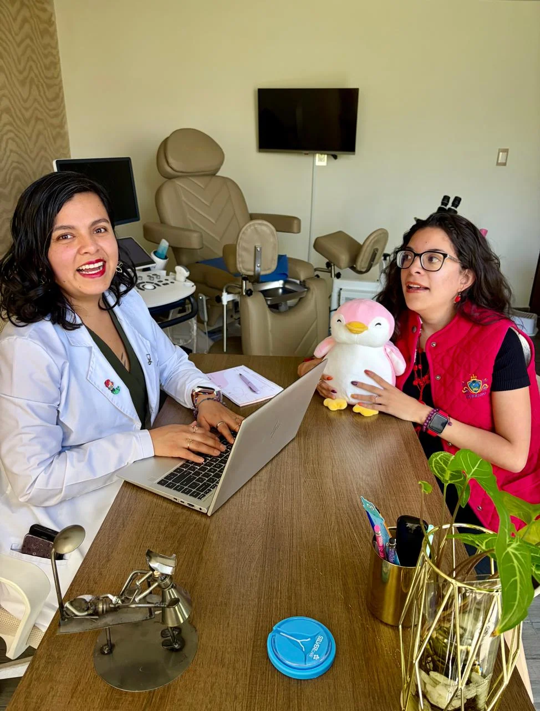
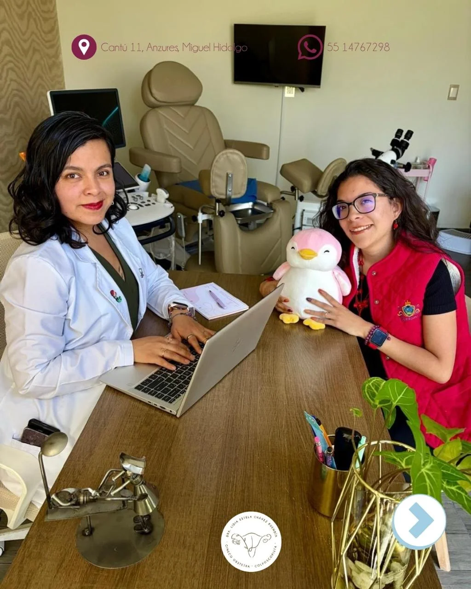
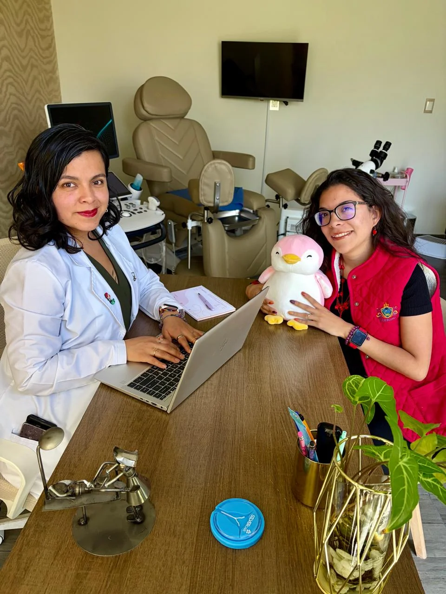
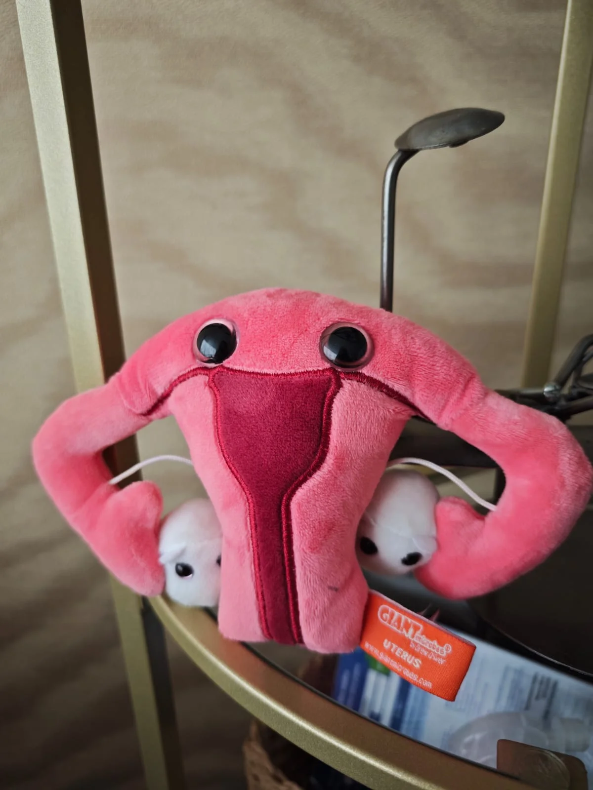
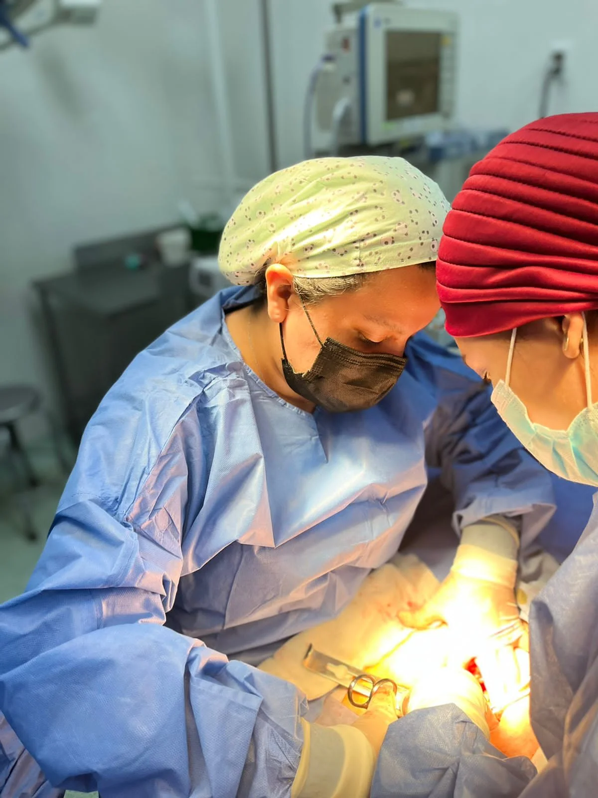
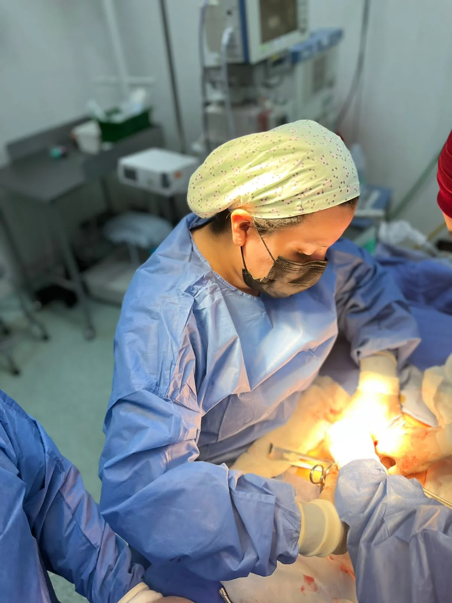

Si buscas una ginecóloga en Polanco que combine rigor médico con trato humano, la consulta ginecológica en CDMX con la Dra. Lidia Chávez brinda la máxima tranquilidad para cuidar de tu salud reproductiva.
Ofrecemos valoración médica personalizada para citas de primera vez o seguimiento continuo en Aurafem (Polanco / Anzures). Reserva tu cita por WhatsApp.

La consulta ginecológica es el espacio médico ideal para evaluar la salud reproductiva femenina. Con la Dra. Lidia Chávez, ginecóloga en Polanco, cada sesión se brinda en un ambiente de absoluta confidencialidad, respeto y comunicación clara.
Se revisan tu historial de salud, ciclo menstrual, anticoncepción y se efectúa una exploración física respetuosa orientada a prevenir o tratar a tiempo cualquier molestia o síntoma pélvico.
Construimos tu historial clínico completo. Conversamos sobre antecedentes, estilo de vida, dudas iniciales sin prisas y determinamos la necesidad de estudios preventivos según tu edad.
Monitoreamos tu evolución clínica tras iniciar un tratamiento prescrito, analizamos estudios de laboratorio ordenados y confirmamos la resolución exitosa de tus síntomas.
Contactas al consultorio y confirmamos tu cita de manera inmediata.
Plática detallada sobre tus síntomas e historial de salud.
Revisión médica profesional realizada con técnica suave e instrumental estéril.
Explicaciones médicas claras y plan de tratamiento personalizado.
La consulta incluye elaboración de expediente, exploración clínica pélvica/mamaria y prescripción médica personalizada.
Se recomienda acudir con ropa cómoda y tener en mente la fecha de tu última regla.
Se recomienda acudir a una consulta ginecológica en CDMX al menos una vez al año como medida preventiva, o de forma inmediata si presentas dolor pélvico o alteraciones menstruales.
En la primera vez se elabora el historial clínico completo y valoración general. En seguimiento se evalúa la evolución de un tratamiento o resolución de síntomas.
Identificación oficial, fecha de tu última regla y, si cuentas con ellos, resultados de laboratorios o ultrasonidos pélvicos anteriores.
Por síntomas urgentes sí. Si se planea tomar Papanicolaou, es recomendable agendar en días posteriores al término del sangrado.
No produce dolor. La valoración se realiza con gentileza e instrumental estéril adecuado cuidando tu tranquilidad.
Conoce de cerca nuestro consultorio en Polanco, equipamiento y el entorno seguro de atención ginecológica.

Consultorio ginecológico y atención inicial
Atención médica empática y profesional Orientación ginecológica personalizada
Orientación ginecológica personalizada

Instalaciones estériles y cómodas
Consulta preventiva y de seguimiento
Evaluación clínica de alta precisión
Atención humana en Aurafem PolancoLa Dra. Lidia Chávez brinda atención ginecológica en Polanco, CDMX, con un enfoque profesional, respetuoso y firmemente orientado al bienestar integral de cada paciente.

Conoce las demás especialidades y estudios preventivos que ofrece la Dra. Lidia Chávez en Polanco, CDMX.
Estudio preventivo para la detección oportuna de alteraciones en el cuello uterino.
Ver servicio →Evaluación visual especializada del cuello uterino con equipo de alta precisión.
Ver servicio →Seguimiento médico mes a mes para el bienestar de la mamá y el bebé durante el embarazo.
Ver servicio →Acompañamiento humano e integral en cada etapa de la gestación.
Ver servicio →Diagnóstico, vacunación y valoración experta del Virus del Papiloma Humano.
Ver servicio →Chequeo completo de rutina para mantener tu salud óptima año con año.
Ver servicio →Atención en zona Miguel Hidalgo, cerca de Polanco, con un fácil acceso y conectividad desde Benito Juárez, Cuauhtémoc y zonas aledañas.
Cantú 11, Colonia Anzures, Miguel Hidalgo, 11590 Ciudad de México, CDMX.
La información contenida en esta página web posee fines exclusivamente educativos e informativos y bajo ningún concepto sustituye una valoración médica profesional en consultorio. Para recibir orientación médica adecuada, agenda una consulta formal con la especialista.
Escríbele directamente a la Dra. Lidia Chávez para revisar fechas disponibles, horarios de atención y resolver tus dudas de forma rápida.